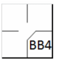
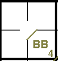
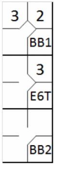
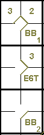

La première base est accordée au batteur qui, lors de son passage à la batte, reçoit quatre lancers en dehors de la zone de strike [OBR Definition of Terms].
Le batteur devient coureur et a le droit à la première base sans danger d’être retiré (à condition qu’il avance vers et touche la première base) quand quatre balles ont été annoncées par l’arbitre [OBR 5.05(b)(1)].
Le scoreur officiel doit inscrire une base sur balles toutes les fois qu’un batteur gagne la première base suite à quatre lancers en dehors de la zone de strike [OBR 9.14(a)].
L'abréviation à utiliser dans la première case de base est « BB », suivie d'un nombre représentant le nombre cumulé de bases concédées par le même lanceur (comme pour les retraits sur prises). Dans l'exemple 20 donné ici, il s'agit de la quatrième base concédée par le même lanceur.
Dans Exemple 20: Dans le cas présent, il s'agit du la quatrième base sur balles concédé par le même lanceur.
| WBSC | Transcription dans l'outil de scorage | Outil |
|---|---|---|
|
 |
/* Le batteur arrive sur base sur un 'base on ball' */ action { batter -> BB } |
 |
En cas de changement de lanceur, le décompte des bases sur balles est remis à zéro.
Lorsqu'un lanceur remplaçant retourne sur le monticule, le premier base sur balles qu'il concède se verra attribuer un numéro supérieur de un à celui qu'il avait accumulé avant son remplacement.
Comme cela a déjà été noté, un base sur balles ne compte pas comme un passage au bâton.
Lorsqu'un ou plusieurs joueurs sont contraints d'avancer en raison de l'attribution d'un base sur balles, leurs avancées sont enregistrées avec le numéro de l'ordre de passage au bâton du frappeur qui a obtenu le base sur balles.
NOTE: Dans ce cas, comme dans d'autres que nous verrons, l'avancement est noté de la même manière qu'un avancement suite à un coup sûr. Nous avons dit précédemment que le nombre sans parenthèses indiquait que les coureurs avaient avancé suite à un coup sûr ; nous pouvons maintenant préciser que ce nombre indique que les coureurs ont avancé grâce au frappeur (qui, dans ce cas, les a forcés à avancer).
Exemple 21:
L'octroi d'un base sur balles au frappeur (le troisième au marbre) a forcé les deux coureurs sur les bases à
avancer.
IMPORTANT: Si la quatrième balle atteint le frappeur, l'avance en première base est comptabilisée non pas comme
un base sur balles, mais comme un « atteint par un lancer » [OBR 9.14(a)]. Si, après avoir obtenu un base sur balles,
un frappeur refuse d'avancer en première base, ce base sur balles n'est pas accordé. Le frappeur est alors retiré et s
on at bat lui est imputé, comme nous l'avons déjà vu [OBR 9.14(c)].
| WBSC | Transcription dans l'outil de scorage | Outil |
|---|---|---|
|
 |
/* Le batteur arrive sur base sur un 'base on ball' */ action { batter -> BB } /* Le deuxième batteur frappe une balle roulante vers l'arrêt court. Le défenseur relance mal la balle */ action { batter -> E6T , runner1 -> + } /* Le batteur suivant arrive sur base sur un 'base on ball' */ action { batter -> BB , runner1 -> + , runner2 -> + } |
 |